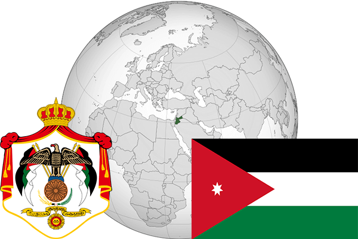

To`liq nomi: Iordoniya
Region: G`arbiy Osiyo
Qonunchilik shakli: Konstitutsion Monarxiya
Asos solingan: 25-may 1946-yil (Birlashgan Qirollikdan)
Poytaxt: Amman
Maydoni: 92 300 km² (dunyoda 110 -o`rinda )
Chegaradosh davlatlari: Isroil, Suriya, Iroq, Saudiy Arabistoni
Aholisi: 9 856 034 (dunyoda 106 - o`rinda, 2016 -yil roʻyxat)
Aholi zichligi: 68/km²
Aholining o`rtacha yoshi: 78,6 yil (81,2 ayollar, 76,0 erkaklar)
Rasmiy tili: Arab tili
Dini: Islom
Pul birligi: Iordaniya dinori
Telefon prefiksi: +962
Internet domen: .jo
Xalqaro tashkilotlarga a`zoligi: BMT (1955 – yildan), Arab davlatlar uyushmasi (22.03.1945-yildan)
Dengiz va okeanlarga chiqishi: Qizil va O`lik dengizlar
YIM: Butun: $ 87,106 mlrd, Jon boshiga $ 12,490 (2016 - yil roʻyxati)
Yirik shaharlari: Amman, Irbid, Ez-Zarka